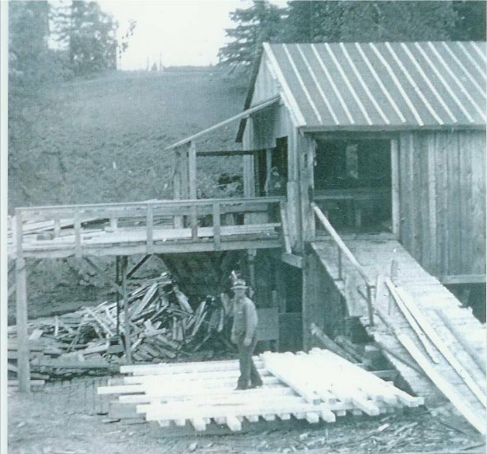

The Family Chronicle
No. 98 July 29, 2005
____________________________________________________________________

John Fowlie at Fowlie’s Mill in 1940; courtesy of Everard MacLean
MacNaughton
My thanks to Thomas Holme for the following note, which arose from his reading of an item in Family Chronicle No. 28:
“There were no McNaughtons living in Dunderave
castle after around 1720. Your website states that Malcolm's son
John was born in Dunderave castle July 24, 1774. But the
MacNaughtons lost the castle and all their lands in the first decade
of the 1700s. By 1711 they final paperwork was finished and
Dunderave no longer belonged to them. Dunderave belonged to the
family of Campbel of Ardkinglas that lived across loch Fyne from the
MacNauchtans. We are sure that a few members of the MacNauchtan
family continued to dwell in the castle for
perhaps another
ten years in hope that some way would develop to return the lands
and castle to the MacNauchtans. But that did not happen. Famous
historians living in that time write that the castle was abandoned
and
none of the MacNauchtan family lived there
afterwards. So you see, he couldn't
have been born in
Dunderave in 1774”.
Darts
We sometimes played darts. Not having a proper cork dartboard, we played against a barn door or wood wall. Neither did we have darts so we made our own.
To make a dart, one followed these easy steps:
Find a bottle cork – I cannot recall which household items came in bottles with cork but in our house, it was not wine.
Sharpen a horseshoe nail. A horseshoe nail was square, slender and pointed. A bit of filing helped.
Push the nail through the cork from the larger diameter to the smaller diameter. Be careful not to split the cork.
Find two matching wing feathers from hens - preferably feathers that the hen had discarded although I know of feathers having been forcibly removed from a reluctant hen.
Push the quill, end of a feather, into the large end of the cork on either side of the head of the horseshoe nail. Again, this step often resulted in splitting the cork.
Try the dart turning the feathers as needed to ensure a smooth flight.
Exercise extreme caution that no one is nearby when throwing darts.
The Chatham Gazette of January 25, 1933 reported that Miss. Frances J. MacDonald, a Little Branch resident, had opened a new dining room at 480 Congress Street in Portland, Maine. The home-like dining room, “The Kencroft” catered to businessmen and women in Portland. Francis MacDonald was a daughter of Ken and Catherine (McGraw) MacDonald and grew up in Black River. An earlier Newsletter carried a poem, which she wrote.
From The Chatham Gazette
of Nov. 30, 1932 REMODELLING Black River Bridge, Nov.
29 – F. A. Fowlie has commenced the work of remodeling the Grist
Mill at Little Branch which has not been in running order for so
many years. The running of this mill will prove a great
convenience to the people of this part. James Thompson and son of
Chatham are in charge of the work.
LITTLE BRANCH
GRIST MILL
This Will be a Boon to that
Section of the Country
During a visit with Anne (Adams) Zavitz from Niagara Falls, I learned that Uncle Tom Adams, Her Grandfather and my Uncle by
marriage, lived in Little Branch and his son,
Ann’s father, James, attended the Little Branch School. She also said the Uncle Tom Adams was badly injured by a falling tree and died from those injuries.
While on the Miramichi recently, I visited the Hiram Baisley Agricultural Museum on the Napan Agricultural Fairgrounds. My brother and I happened in while Jim and Betty MacDiarmid were cleaning and rearranging in preparation for the upcoming Fair.
There is an extensive collection gathered together by Hiram Baisley and, as I understand it, left to the Agricultural Exhibition on Mr. Baisley’s death. I had a chance to view artifacts in the museum building and in the yard adjacent to it. There are other artifacts stored in a nearby barn. Included in the display are some diorama’s carved by Mr. Baisley. Napan is to be commended for saving this important component of its history. The Museum is well worth a visit.
An earlier Newsletter referred to a “running pole” being used to set the “dogs” of a hay forker in the rafter of a barn. A running pole was used to push corners of nets when setting nets on ice. A similar, shorter and stiffer pole was used for anchoring forker dogs. Sorry
The Chronicle is an occasional newsletter published by Don Glendenning and posted on the family website. It is intended to share information about my family, community and the times in which I grew up. While every effort is made to be accurate, errors are likely to occur. Comments, enquiries and information may be sent to 62 Queen Elizabeth Drive, Charlottetown, PEI, C1A 3A9. Tel:902 892 5859. Email: dglende@auracom.com Web: www.glendenning.net